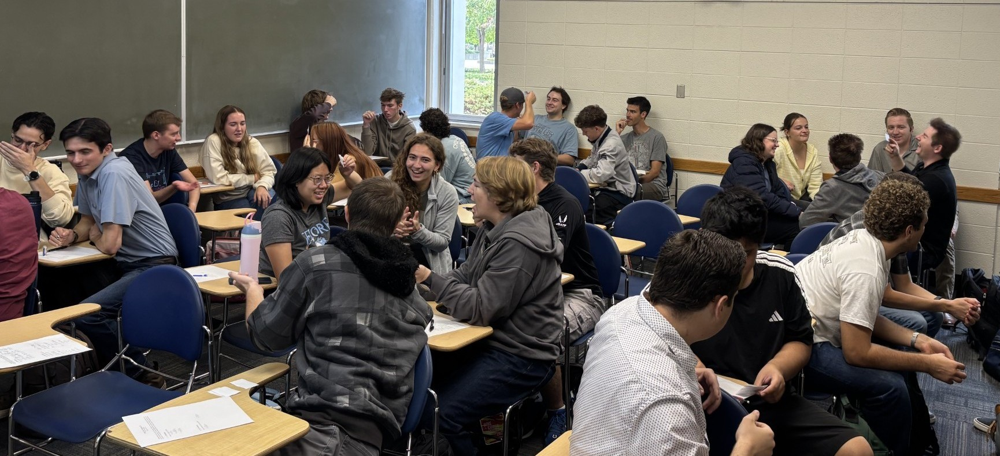

Hi, I'm Eden Danielsen-Jensen.
I usually go by Eden DJ.
I am a Ph.D. candidate in Mathematics at Brigham Young University, studying several complex variables under the supervision of Professor Jennifer Brooks. My research focuses on invariant CR mappings and proper holomorphic maps between spheres and hyperquadrics.
I am also passionate about undergraduate mathematics education and designing interactive learning experiences that help students build conceptual understanding and become confident, independent problem solvers.
About Me
I grew up in Queensland, Australia before moving to the United States to pursue graduate studies at BYU, where I enjoy finding ways to communicate complex ideas through clear explanations, visual design, and active learning.
Outside of mathematics, I enjoy reading, baking, travelling, and sharing Australian culture with my students through a daily "Five Minutes of Australia" classroom tradition.
Fun Facts
- 🔆 Originally from the Sunshine Coast, Queensland, Australia.
- 🏐 Member of the 2022 Australian UniSport Nationals Division I Championship volleyball team.
- 🦔 Proud owner of a pet hedgehog named Pickles.
Teaching Snapshot
I believe students learn mathematics most effectively when they understand why ideas work. My teaching emphasizes conceptual understanding, active learning, and visual problem-solving through guided lecture notes, collaborative reviews, and mathematical decision roadmaps.
Research Snapshot
My research lies in several complex variables and CR geometry, with particular focus on:
- Proper holomorphic mappings
- CR mappings between spheres and hyperquadrics
- Invariant polynomial maps
Recent News
- September 2026: Submitted Degree-Three Rational Sphere Maps: Sharp Denominator Region and Gram Normal Forms
- June 2026: Invited participant at the 2026 Collaborative Workshop in Several Complex Variables at the Institute for Advanced Study in Princeton
- Summer 2026: Instructor of Record for MATH 213 (Elementary Linear Algebra)
Teaching Portfolio
My goal as an instructor is to help students develop a deep conceptual understanding of mathematics while becoming confident, independent problem solvers. I strive to create a classroom where students actively engage with ideas, explain their reasoning, and recognize connections between concepts rather than relying on memorized procedures.
To support this, I design active and collaborative learning activities, guided lecture notes, visual problem-solving roadmaps, and review materials that help students organize their thinking, communicate mathematical ideas, and develop effective mathematical decision-making skills.
Below is a sampling of materials across Precalculus, Calculus I and II, and Linear Algebra. All materials on this page—including my customizable LaTeX lecture note template—are freely available to download, adapt, or modify for non-commercial educational use.
Active & Collaborative Learning
I design activities that ask students to talk about mathematics, make decisions, and explain their reasoning to one another. These activities give students opportunities to practice choosing appropriate methods, compare approaches, and learn from their peers while I circulate to listen, ask questions, and address misconceptions.
Integration Heads Up — MATH 113, Calculus II
For an exam review, I adapted the game Heads Up to help students practice recognizing and explaining major integration techniques. Students work in groups of four and take turns identifying a concept from their teammates' clues.

Find Your Integration Partner — MATH 113, Calculus II
To introduce integration by parts in recitation, I designed a matching activity in which each student receives either an integral or a corresponding choice of u and dv and must find the student with the matching card. Partners then justify their match, compute du and v, and predict what will happen after applying integration by parts.
Students keep these partners for a collaborative worksheet that progresses from definite integrals to repeated integration by parts and cases in which the original integral reappears. Pairs then compare solutions and explain their reasoning to one another. The activity is designed to shift attention from simply applying a formula to choosing a productive setup and anticipating the structure of the resulting integral.
Collaborative Blackboard Exam Reviews
Rather than holding a traditional instructor-led review session, I prepare students for exams through collaborative blackboard review activities. Students work together at topic-based stations to explain ideas, solve problems, and learn from one another while I circulate to provide targeted guidance and address misconceptions.
Lecture Notes & Course Materials
I design structured, fill-in lecture notes that provide students with an organizational framework while leaving space for key definitions, reasoning, examples, and problem solving to be developed together during class. The consistent structure allows students to focus more attention on mathematical ideas and less on copying material from the board.
LaTeX Lecture Notes Template
Modular tcolorbox template with roadmaps,
think-pair-share prompts, definitions, and strategy boxes.
Engaging Assessment — MATH 109, Precalculus
I aim to carry the same sense of curiosity and engagement from the classroom into assessment. When appropriate, I write problems with playful or memorable contexts while preserving the mathematical content I want students to demonstrate. For example, on this MATH 109 final exam, students apply right-triangle trigonometry to determine the height of a dragon flying above a villager from observations made by a guard standing on a castle tower. The setting is lighthearted, but the problem still requires students to interpret a diagram, construct the relevant triangles, select appropriate trigonometric relationships, and communicate a complete solution.
Mathematical Decision Roadmaps
One challenge students often face is deciding what to do next when solving a problem. To support independent problem solving, I design visual decision roadmaps that organize common solution strategies into clear, step-by-step processes. Rather than memorizing isolated procedures, students learn to recognize the structure of a problem and choose an appropriate solution path.

Eigenvalues & Eigenvectors Roadmap
Step-by-step visual flowchart for finding eigenvalues and eigenvectors.

Eigenvalues Roadmap
Step-by-step visual explaining why we find eigenvalues the way we do.

Linear Independence Roadmap
Step-by-step visual flowchart for deciding whether a set of vectors is linearly independent.

Solving Systems Roadmap
Visual decision tree for finding the solution to a system of linear equations.

Orthogonal Diagonalization Roadmap
Step-by-step visual flowchart for computing an orthogonal diagonalization of a real symmetric matrix.

Singular Value Decomposition Roadmap
Step-by-step flowchart for computing a singular value decomposition for general matrices.
Classroom Community
Building classroom community is just as important as building mathematical understanding. I use the first few minutes of class for low-stakes conversation that helps students get to know me and one another. Question of the Day and Five Minutes of Australia are two routines I use to build a welcoming classroom community in which conversation and participation feel natural.
Teaching Experience
Brigham Young University
Instructor of Record
- MATH 213: Elementary Linear Algebra
- MATH 112: Calculus I
- MATH 109: Precalculus
- MATH 116: Essentials of Calculus
Teaching Assistant & Recitation Leader
- MATH 113: Calculus II
- MATH 341: Theory of Analysis I
Grader
- MATH 570: Matrix Analysis
- MATH 510: Numerical Linear Algebra
- MATH 314: Calculus of Several Variables
University of the Sunshine Coast
Tutorial Instructor
- MATH 104: Introductory Calculus
- MATH 103: Introduction to Applied Mathematics
- SCI 110: Science Research Methods
Research Overview
My research lies in Several Complex Variables (SCV) and CR Geometry, under the supervision of Professor Jennifer Brooks at Brigham Young University. I am broadly interested in proper holomorphic and CR mappings between complex domains, particularly the role that symmetry plays in determining their geometric and algebraic properties. My current research investigates group-invariant maps from complex spheres to hyperquadrics, with a particular focus on understanding which target hyperquadrics admit such maps and constructing sharp examples that realize lower bounds. To study these questions, I combine techniques from complex analysis, algebra, and computational mathematics.
Prior to beginning my Ph.D., my honours research at the University of the Sunshine Coast was in radical theory, where I used class operators to develop a new interpretation of results concerning the base-semisimple class.
I value collaborative research and enjoy working with others to combine different perspectives and techniques. If your research interests overlap with mine, I would be delighted to connect and discuss potential collaborations.
Research at a Glance

Group-invariant CR maps send complex spheres into hyperquadrics. Much of my research focuses on understanding when such maps exist and determining which target hyperquadrics can occur.

Since each signature corresponds to a target hyperquadric, these plots provide a visual way to organize known constructions, reveal patterns, and identify examples.
Research Interests
Current Projects
Lower Bounds for Invariant CR Maps
We investigate lower bounds for group-invariant CR maps between spheres and hyperquadrics. By reformulating the problem in terms of invariant polynomials, their signatures, and associated positive matrices, we develop a new approach to proving sharp lower bounds relating the degree of the map to the target dimension.
Degree-Three Rational Sphere Maps: Sharp Denominator Region and Gram Normal Forms
We study degree-three rational sphere maps between complex unit balls. Using Gram matrix techniques, we characterize exactly which normalized quadratic denominators admit sphere maps, develop canonical Gram normal forms, and describe the corresponding moduli space.
Presentations
Several Complex Variables
Signatures for Group-Invariant Monomial Maps from Spheres to Hyperquadrics
- Joint Mathematics Meetings (JMM), Washington, DC, January 2026
- MAA Intermountain Section Meeting, Provo, UT, March 2026
- BYU Student Research Conference, Provo UT, February 2026
Algebra
A Revised Introduction for the Base Semisimple Class
- Australian Algebra Conference, Sunshine Coast, QLD, December 2022
- Australian Mathematical Society Conference, Sydney, NSW, December 2022
Research Activities & Workshops
Collaborative Research Workshop in Several Complex Variables

Participants in the Collaborative Research Workshop in Several Complex Variables, Institute for Advanced Study (IAS), Princeton, 2026.
Service & Outreach
I contribute to the mathematical community through departmental and graduate student leadership, teaching and professional development, mentoring, and professional service. I particularly value opportunities to build community, support student success, and create resources and programs that help students develop as mathematicians, teachers, and professionals.
Departmental & Graduate Leadership
Assistant Director, Women in Math
Help lead Women in Math within the department by organizing events and initiatives that strengthen community, support professional development, and connect students and faculty.
- Organized a departmental seminar on Imposter Syndrome in Mathematics, bringing students and faculty together for a conversation about navigating imposter syndrome in academic mathematics.
- Coordinate a weekly Women in Math lunch, providing an informal space for students to connect, build friendships, and strengthen community within the department.
- Assist with event planning, communication, scheduling, and other administrative responsibilities for Women in Math.
Graduate Student Cohort Representative
Represent the mathematics graduate student cohort and develop initiatives that support graduate student professional development, research progress, and community.
- Communicate graduate student feedback, concerns, and suggestions to the department.
- Founded and organize a graduate student writing group that provides regular accountability and peer support for research writing.
- Organized a professional development workshop on building an academic website, helping graduate students develop an online professional presence and showcase their research, teaching, and academic work.
- Organize graduate student community-building activities, including events for incoming students and graduate student game nights.
Teaching & Professional Development
Graduate TA Training Workshop Facilitator
Led a workshop for incoming mathematics graduate students during departmental TA training on building rapport with students in the classroom. Shared practical strategies for creating a welcoming classroom environment, encouraging student participation, and developing productive instructor–student relationships.
Student Outreach & Mentoring
Graduate School Panelist
Serve as an invited panelist for graduate-school information sessions for undergraduate mathematics students, sharing experiences and answering questions about preparing for and applying to graduate school, choosing programs, research, teaching, and graduate student life.
Mathematics Support Sessions
Created and facilitated supplementary support sessions for first-year mathematics students with varying levels of preparation, helping students strengthen foundational skills, develop effective problem-solving strategies, and build confidence in engaging with university mathematics.
Professional Service
Australian Algebra Conference — Conference Organization
Assisted with the organization and delivery of the Australian Algebra Conference, supporting conference logistics and participant coordination.